Northern house
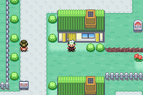
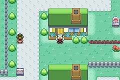
The northern house borrows the school’s flower boxes. The Center gets paired plantings, the Mart a smaller planted side, and the school and gym get restrained lawn edging. All 25 edits reuse existing map tiles; the earlier gardens and paths remain intact.
Five-minute review: compare these three views in daylight, then switch to night. Check the house’s flower boxes, the space around the service-building doors, and how the plants sit beside the player. The optional views show the school and the more open gym frontage.


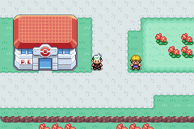
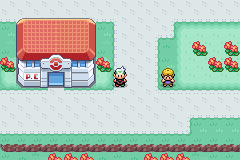
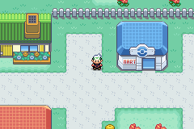
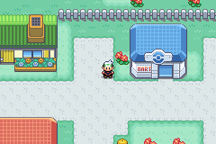
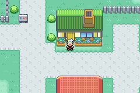
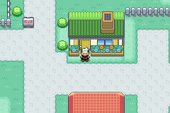
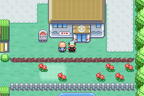
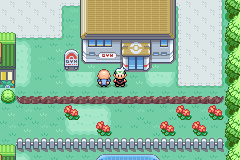
These are source-map renders without actors. The comparisons above are native 240×160 emulator captures.
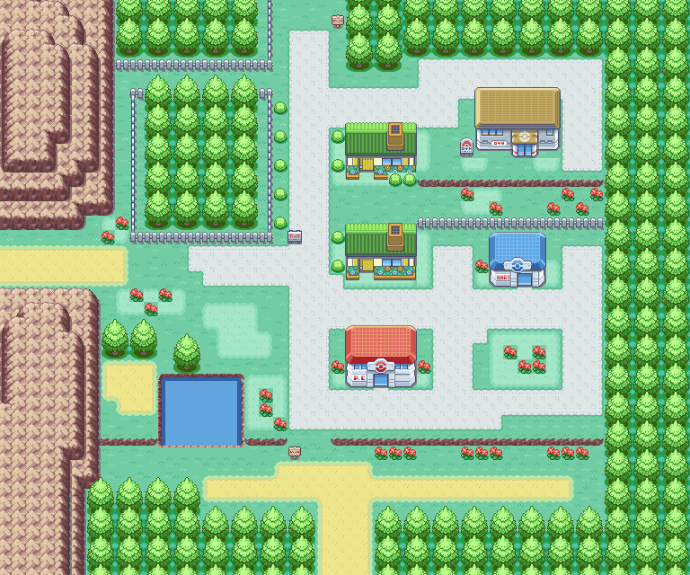
25 map cells changed. No tileset definitions, bitmap art, palettes or gameplay code changed.
All 1,920 cells preserve collision, elevation and nonvisual attributes. 380 protected gameplay cells are untouched. All 69 garden cells and 70 prior path edits are identical. All five door approaches and three entrances keep the same walking component. Four routes sharing this tileset render identically.
148 focused assertions passed, plus 50 full regression suites (1,331 assertions). All 15 paired runtime background-palette snapshots match. All five doors, four signs, three bidirectional connections, both roadblock states, the gym’s lock/recoil and old-man dialogue in both states, and the catch tutorial pass. Player and follower passage covers all planted edges. The prepared save also passes on the unpatched delivery ROM.
ROM and capture provenance · Map audit · Exact tile edits · Native window-pixel checks · Protected cells and edited cells · Existing ground-piece atlas · Full regression result · Player and follower at a planted edge
The 1,064 tracked facade-glass pixels keep their positions and palette ownership. Their rendered colors and visibility match at noon, dusk and night: 3,192 native pixel comparisons. Existing warm glass stays warm; previously unlit decorative panes keep their normal tint.
The fixture creates a synthetic later-story state for ordinary entry/exit checks; it is absent from the delivery ROM. The existing catch-tutorial regression separately exercises the early-story sequence.
This completes the three-stage Viridian map-art pilot. The earlier landscaping and path galleries remain available in the repository.